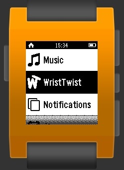

Documentation
Introduction
Wrist Twist is the first gesture recognition application I am developing for my project. As it states, the gesture to be recognised is the motion of your wrist twisting. Once the application is opened, you come to the start screen. If you then press select, the application is started. A counter is then displayed, starting at zero, and increased by one, every time the gesture is completed. The real time X, Y and Z coordinates are not displayed by can be retrieved in the console print commands. The current level of gesture detection is good, but false positives do remain a problem.
How it works
The application works by first manipulating the arrays. A readout of the accelerometer is made multiple times within the second and then a data event is posted as in the other applications. Wrist Twist then manipulates each array into another Array but this is twice as long due to the method proposed by Jiahui Wu in his paper "Gesture Recognition with a 3-D Accelerometer," 2009. By using each element twice in the array we can create multiple frames from the single segments of data. Frame n would be made up of segment n and n+1. For example, frame 1 is made up of segment 1 and 2; frame 2 is made up of segment 2 and 3. This allows us to easily compare the previous read out without having to constantly move over the array's computing time and computing power which the pebble lacks.
This method also allows us to compare a gesture as a set of values to the ones detected. A gesture is made up in the same way, but instead of x, y, z values in the frames, they contain the negative or positive differences in relation to the 2 segments in the frame. This allows for violent movement above the stated limit. It also stops the users have to directly copy the movement, as every person will interpret gestures differently.
The comparison algorithm at this stage is very rudimentary and tailored to this gesture. However the basics are there to be modified into a robust, generic algorithm for the next prototype. By comparing each frame at a time, you can then disregard frames quickly if they do not meet the pattern, again saving computing power and time. If a gesture is detected, a timeout is started to stop that same gesture being detected again in that same period. This stops false positive as well as the user trying to violently interact with their watch.
Another way false positives are stopped, is by using the vibration field. This is a field, filled out by the pebble, in each segment. The boolean value is set to 1 if, while during that segment, the vibrator is operating. The vibrations hinder the accelerometer and can trick it into thinking it has moved.
Once all this has taken place all current arrays are deleted and the process is started again.
Known Bugs and Future Improvements
- False Positives
- Shaking not diregarded

Introduction
This application is dedicated to the revealing of the noise levels, on your Pebble's accelerometer. If you are new to this area of research, you may have not come across the word "noise" being used in this context before. In a broader sense of the word, it means a reduction in clarity. With acoustic noise, this is when someone makes and unwanted sound. The noise I am talking about is the "random and persistent disturbance, that obscures or reduces the clarity of a signal or measurement".
How it works
Now to the inner workings. This app measures the accelerometer 25 times and then produces results based on these 25 measurements. This value can be changed in the source code on line 13, if you are interested in a wider range of values. Once collected, all results are entered into arrays concerning their respective axis, x, y and z. The min, max and average values for each axis are then taken from these arrays.
Noise is calculated via Max - Min in an absolute form, to avoid any misleading subtraction to do with negative numbers. Each value is outputted to an end screen you can see in the app, or keep track of in the console.
Known Bugs and Future Improvements
- Multiple instances upon returning to the main app screen. This has been temporarily fixed via a forced restart after a measurement has been analysed.
- Span of data could be improved by using the whole array which is being generated on each data event.

Introduction
While I realise there are many applications, for the pebble, that do present this data already, I have decided to make my own. This was due to the fact that, as well as for my own programming benefit, I could not find a simple monitoring application. Also, most are written in C, so I felt a JavaScript version was needed.
How it works
Using pebble.js, once select is pressed, I look for a "Accel.on('data', callback)". These fire continuously, until back or select is pressed. Upon this event, I unsubscribe from the data event and return to the main screen.
Known Bugs and Future Improvements
- Problems switching to and from the tracking screen and the main screen, can result in a crash or the app being forced back to the tracking screen.
Introduction
The initial application produced to provide me with an accelerometer read out. While it does not monitor the accelerometer in real time, upon on the press on the “select” button (the middle button on the watch), it then outputs accelerometer data to do the screen. The back button can then be pressed to get back to the main screen. Once here, another measurement can be taken and so on.
This application also was my first introduction into the Graphical User Interface behind the pebble. Admittedly, in my limited experience in application development, I don’t really know the correct way in which to develop a GUI for an application. On the other hand, I felt like the way the Pebble goes about it, is unconventional. This is due to the use of “windows” and “cards” to control the screens with methods to hide and show them, rather than close and open. Nevertheless, it seems to work well and was easy to pick up, but I do foresee problems in future development, with many menus producing many instances of windows stacked on top of each other.
How it works
This being my first proper application using pebble.js is very crude in the way it works. However, it was a learning curve into the documentation and various applications for the accelerometer. The app works by retrieving the first sample of the array produced on the data event at the time of the click of the select button. Being relatively simple, it only takes up 54 lines of code, including spaces. Many console logs also allow for tracking in the console output.
Known Bugs and Future Improvements
- Nothing to report, all issues solved so far.